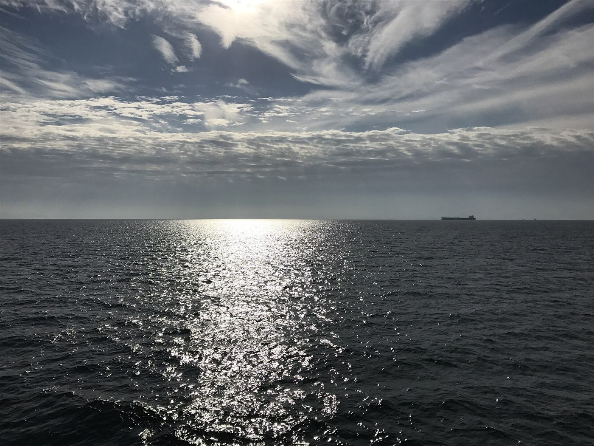
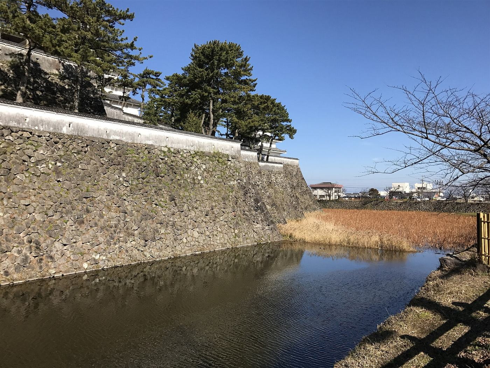
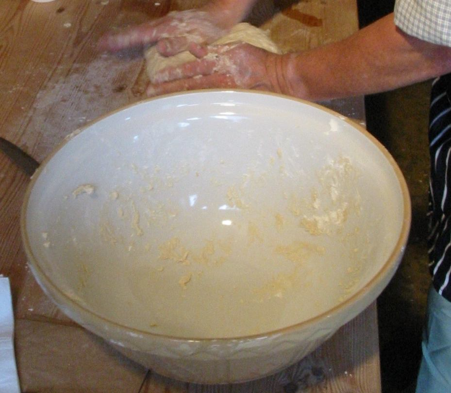

お店について
花ぞのパン
花ぞのパンは、長崎県島原市北門町にあるパン屋です。お問い合わせはお電話でどうぞ。Instagramもご覧いただけます。
| 店名 | 花ぞのパン |
|---|---|
| 所在地 | 長崎県島原市北門町126 |
| 電話 | 0957-64-3230 |
| @hanazono_pan | |
| 営業時間 | 準備中(お問い合わせください) |
| 定休日 | 準備中(お問い合わせください) |
| 駐車場 | 準備中(お問い合わせください) |
| 席・イートイン | 準備中(お問い合わせください) |

島原城の堀(長崎県島原市)島原のまち
島原は、城下町として知られる長崎県のまちです。湧水が豊かで「水の都」とも呼ばれ、まちなかには水路が残る場所もあります。東は有明海に面し、遠くには雲仙岳の山並みも望めます。
ここでの紹介は島原についての一般的なご案内で、花ぞのパンとの関係を示すものではありません。
 水路のイメージ写真
水路のイメージ写真
有明海(島原での撮影とは限りません)
パンのこと
パンは、小麦粉や水などから生まれる、身近な食べものです。花ぞのパンのお店の特徴、原材料、製法、スタッフ、店名の由来などについては、準備中です。
詳しくは、お問い合わせください。(お電話 0957-64-3230 またはInstagram)

イメージ
ご連絡はお電話かInstagramへ
営業時間・メニュー・お取り置きなどについては、準備中(お問い合わせください)。